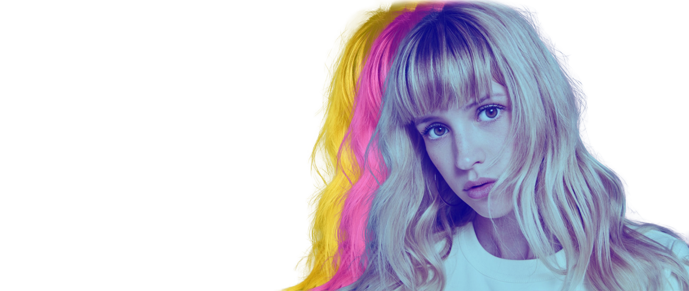

Stumble is a playlist generator for Spotify created by Cas de Bruijn. Unlike other playlist generators,
Stumble gives you a playlist based on your visual preferences. If you don't know what you're looking for
and want to discover new music, give it a go!
Not only are you able to generate a playlist on Stumble, you can also browse through our Stumble
Playlist library. This library is filled with playlists
curated by various music lovers selected by
Stumble. Each of these playlists are created to make a specific activity, like cooking or cleaning, the
more enjoyable.